33 Spiele für iPhone und iPad: Gerät quer halten. Ton gibt es nach dem ersten Antippen; dafür den Stummschalter des iPhones ausschalten. Tipp: in Safari „Teilen → Zum Home-Bildschirm“, dann laufen sie im Vollbild. Mit „II“ pausierst du, mit „←“ geht es zurück hierher.
Tippen oder halten, irgendwo auf dem Bildschirm
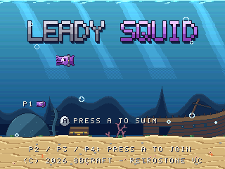
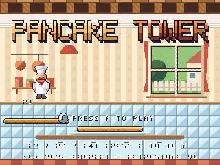
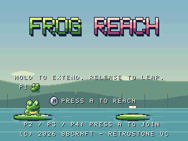
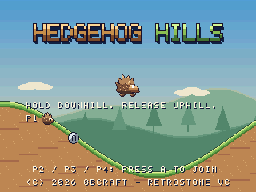
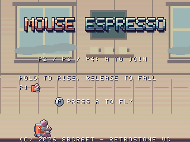
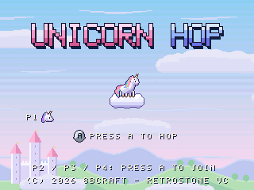
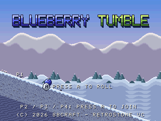
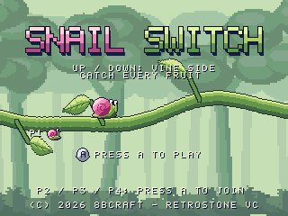
Linke und rechte Bildschirmhälfte
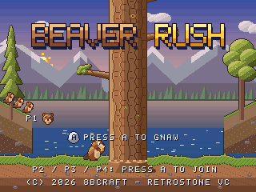
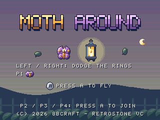
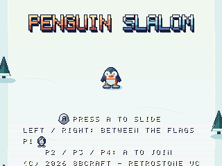
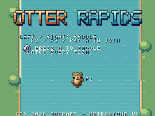
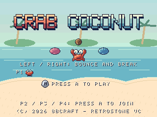
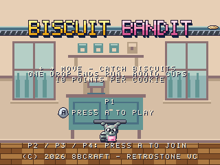
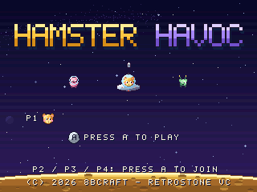
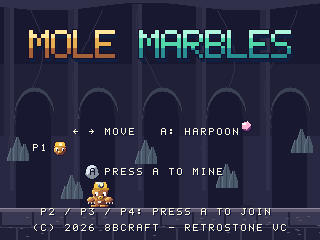
Tippen auf Stellen, ziehen, wischen
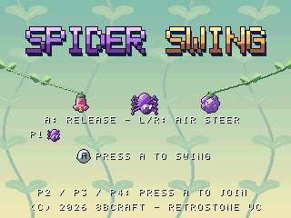
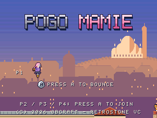
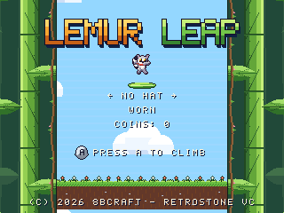
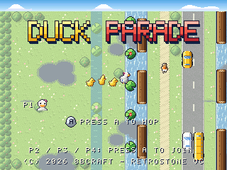
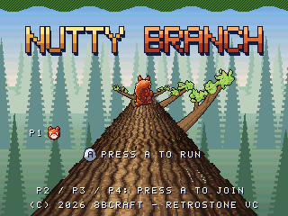
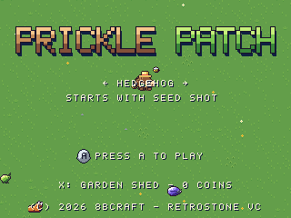
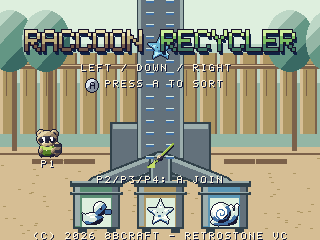
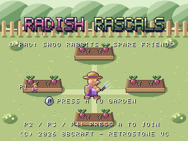
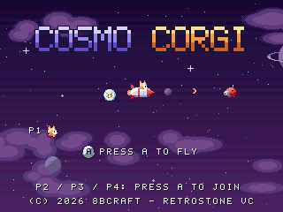
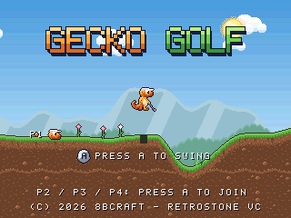
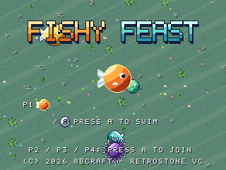
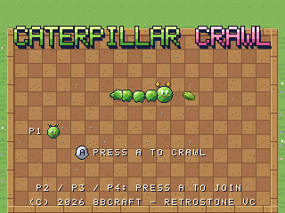
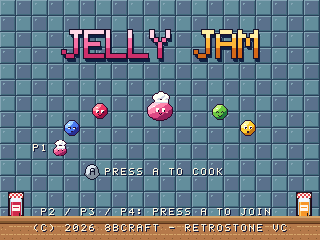
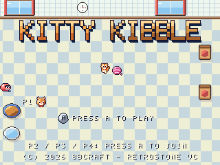
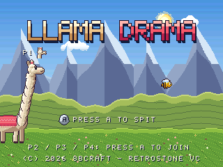
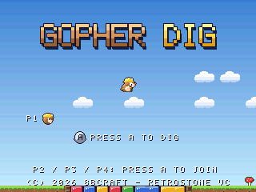
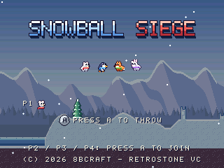